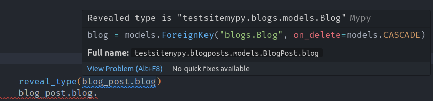

Context¶
Info
This section expands on this article, which goes into more technical details.
This section describes how django-autotyping is able to provide features working with any type checker and without
having to manually annotate your code.
The current state of typing with Django¶
Django being created way before type hints were a thing in Python, it wasn’t designed with typing support in mind. For this reason, external type stubs are maintained by the TypedDjango organization.
By installing django-stubs, you will be able to enforce type checking in your Django project, and also benefit from a nicer development experience assuming you are using a LSP implementation in your IDE.
However, it is sometimes not possible to support all the dynamic features provided by Django at runtime.
The most common (and probably annoying) example appears when dealing with models and foreign fields:
from django.db import models
class Blog(models.Model): ...
class BlogPost(models.Model):
name = models.CharField(
max_length=255,
)
blog = models.ForeignKey(
to="Blog",
on_delete=models.CASCADE,
)
When accessing attributes of this model at runtime, the database type is mapped to a Python type:
However, there is currently no way to describe the type of blog_post.post using native typing features (as it is being referenced as a string to avoid circular imports).
To overcome this issue, a mypy plugin is provided, that will make use of your project settings to discover the available models, so that mypy can understand string references, amongst other features.
The drawbacks of using the mypy plugin¶
Using a type checker can be beneficial to catch errors that would usually result in unhandled exceptions at runtime. To get immediate feedback on these errors along with the inferred types of your code, the type checker can be hooked up in your IDE via a LSP integration (for VSCode users, this is what Pylance is essentially doing).
Does this mean we can get all the nice auto-completions and features provided by mypy and the Django plugin?
Not really. While LSP implementations for mypy are available, they seem to be lacking important features that you would expect in an IDE. You do get the correct types from the mypy plugin, but you are missing all the highlights/auto-completions:

Using customized stubs for your project¶
To overcome this issue, we need to find a solution that would ideally:
- Be agnostic of any type checker, that is only using the existing Python typing logic.
- Avoid having to manually annotate your code, if possible.
django-autotyping will take advantage of the ability to use a custom type stubs directory (you might need to configure your type checker TODO link), where a customized copy of django-stubs will be created. Because django-autotyping knows the current
state of your application (e.g. the available models, views), it will generate additional overloads when possible, matching string
references to your models for example.
Example
A smart feature available in type checkers is to add overloads to the __init__ method
of a class to influence the constructed object type. With the following:
# __set__ value type
_ST = TypeVar("_ST")
# __get__ return type
_GT = TypeVar("_GT")
class ForeignKey(Generic[_ST, _GT]):
@overload
def __init__(
self: ForeignKey[Blog | Combinable | None, Blog | None],
to: Literal["Blog", "blogs.Blog"],
...,
null: Literal[True],
...
): ...
@overload
def __init__(
self: ForeignKey[Blog | Combinable, Blog],
to: Literal["Blog", "blogs.Blog"],
...,
null: Literal[False] = ...,
...
): ...
Without going into the details of the Django field descriptors, this enables the following:
class BlogPost(models.Model):
blog = models.ForeignKey(
to="Blog",
on_delete=models.CASCADE,
)
BlogPost().blog # typed as "Blog", or "Blog | None" if null was set to `True`
You get:
- Complete support for typed foreign fields, without any manual annotations
- Support for nullable fields
- Complete IDE support!
Dynamic stubs dont' solve everything¶
Even if the generated dynamic stubs cover a lot of cases, explicit annotations are still required sometimes. Consider the use case of reverse relationships:
# On a blog instance, the related blog posts can be accessed:
blog.blogpost_set # Or with a custom attribute name, by specifying `related_name`
To make the type checker aware of this attribute, you have to explicitly annotate the Blog class:
class Blog(models.Model):
# `BlogPost` also needs to be imported, and the `Manager` class
# used might differ:
blogpost_set: Manager[BlogPost]
For these kind of use cases, django-autotyping provides a add_type_hints command, that will take care
of automatically add type hints to your source code.